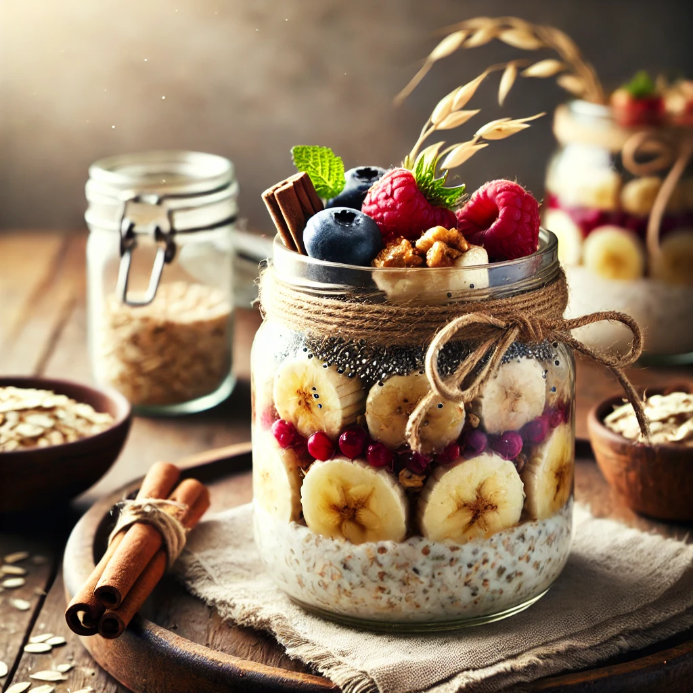

Overnight Oats

Description
An easy and healthy breakfast that you can prepare in advance.
Ingredients
- Wholegrain Oats
- Protein Powder
- LSA mix
- Walnuts
- Milk
- Water
-
Any additional toppings such as banana or berries etc.
Method
- Add 2/3 cups oats to a jar
- Add 2 T Protein powder
- Add 2 t LSA mix
- 2 pieces of walnut
- 2/3 C milk
- 1/3 C water
- Refridgerate overnight and serve in the morning
Back to home